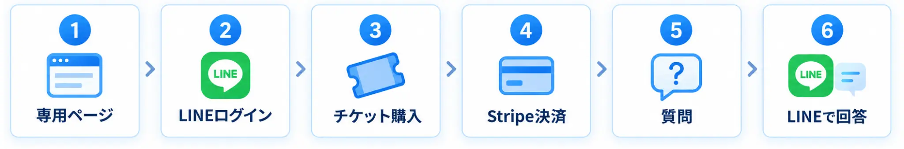
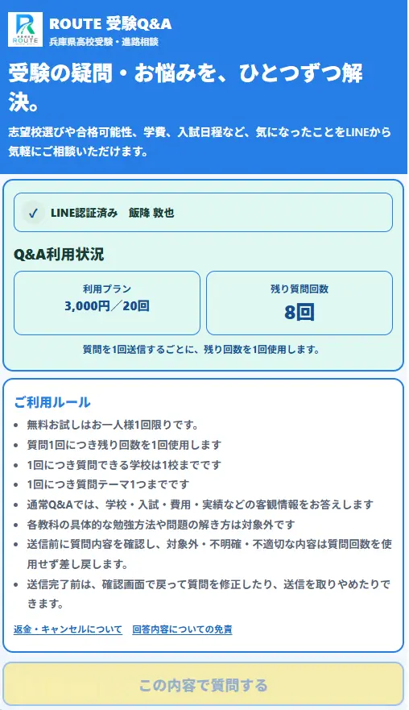
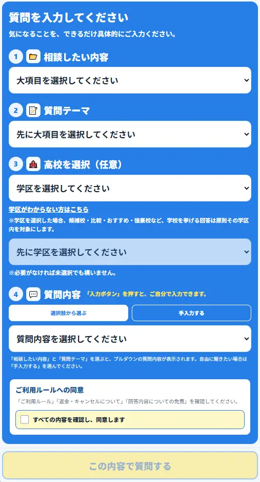
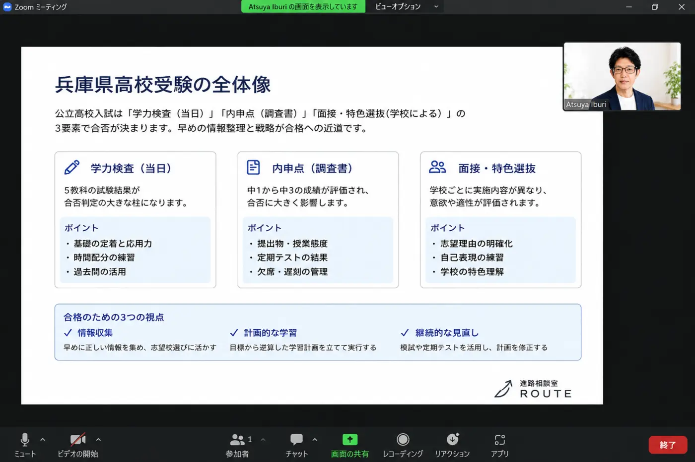

高校受験の
「これ、うちの場合どう？」を
LINEで1問から。
学校選び・内申点・実力テスト・私立専願・受験日程。聞きたいことを、必要な分だけ。
何を質問すればよいか分からなくても、画面の選択肢に沿って進められます。回答はLINEに届きます。
営業時間 12:00〜24:00 ／ 月曜休業 ／ 営業時間内の回答目安 5〜30分
※上記は説明用の短い回答イメージです。
今、気になっていることはどれですか？
近いものを押して、そのままQ&Aへ。質問文を最初から考えなくても大丈夫です。
当てはまらなくても大丈夫。自由入力でも質問できます。
まず1問だけ、無料で聞いてみてください。
登録後、初回は1人1問無料。合うかどうかを確かめてから必要な分だけ利用できます。
質問まで、迷わない仕組みにしています。
難しい入力は不要。選択肢に沿って進み、必要なところだけ記入します。
専用ページを開く
LINEからQ&A専用ページへ進みます。
項目を選んで質問
学校・テーマなどを選び、必要に応じて自由入力します。
回答はLINEへ
営業時間内は目安5〜30分で回答が届きます。

実際の画面と、回答のイメージ。
「どんなサービスか分からない」を減らすため、実際の操作画面を掲載しています。
選択肢から質問を作れます


回答はLINEに届きます
まず「内申」「実力テスト」「志望校の位置」を分けて整理します。内申だけ、実力テストだけで判断せず、今の時点で不足している情報と、次に確認することまで順番に整理してお伝えします。
※これは回答形式のイメージです。実際の回答は質問内容に合わせて作成します。
「一般論」ではなく、保護者が次に動ける回答へ。
受験情報を並べるだけでなく、何を確認し、どう考えるかまで整理することを重視しています。
学区・公立・私立・専願など、兵庫県の高校受験で出やすい疑問に焦点を当てます。
相談予約を取るほどではない疑問でも、必要なときに必要な分だけ確認できます。
判断材料が足りない場合も、確認先・確認項目・考え方が分かる形を目指します。
まず無料。必要になったら追加。
大きな契約ではなく、質問したい回数だけ選べます。
初回
1人1回
3問チケット
1問あたり約333円
10問チケット
1問あたり300円
クレジットカード・電子決済対応。詳細はQ&Aページでご確認ください。
資料や成績を見ながら話したい場合は、オンライン相談。
Q&Aは「1問ずつ確認する」サービス。複数の条件をまとめて整理したい場合は、オンラインで直接相談できます。
オンライン相談について問い合わせる
始める前によくある不安
何を質問したらよいか分かりません。
質問画面に選択肢があるため、近い項目を選びながら進められます。自由入力もできます。
初回無料だけ利用しても大丈夫ですか？
大丈夫です。初回1問でサービスを確かめてから、必要な場合だけ追加チケットを選べます。
回答はどこに届きますか？
LINEに届きます。営業時間は12:00〜24:00、月曜日は休業です。
長い相談もQ&Aでできますか？
1問ずつ整理できる内容はQ&Aが向いています。成績・資料を見ながら複数テーマをまとめて相談したい場合はオンライン相談をご利用いただけます。